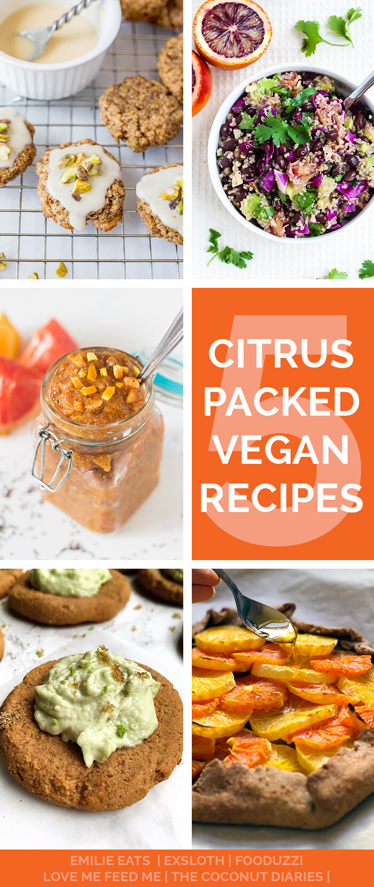
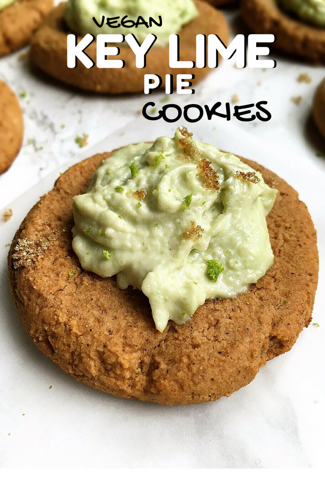
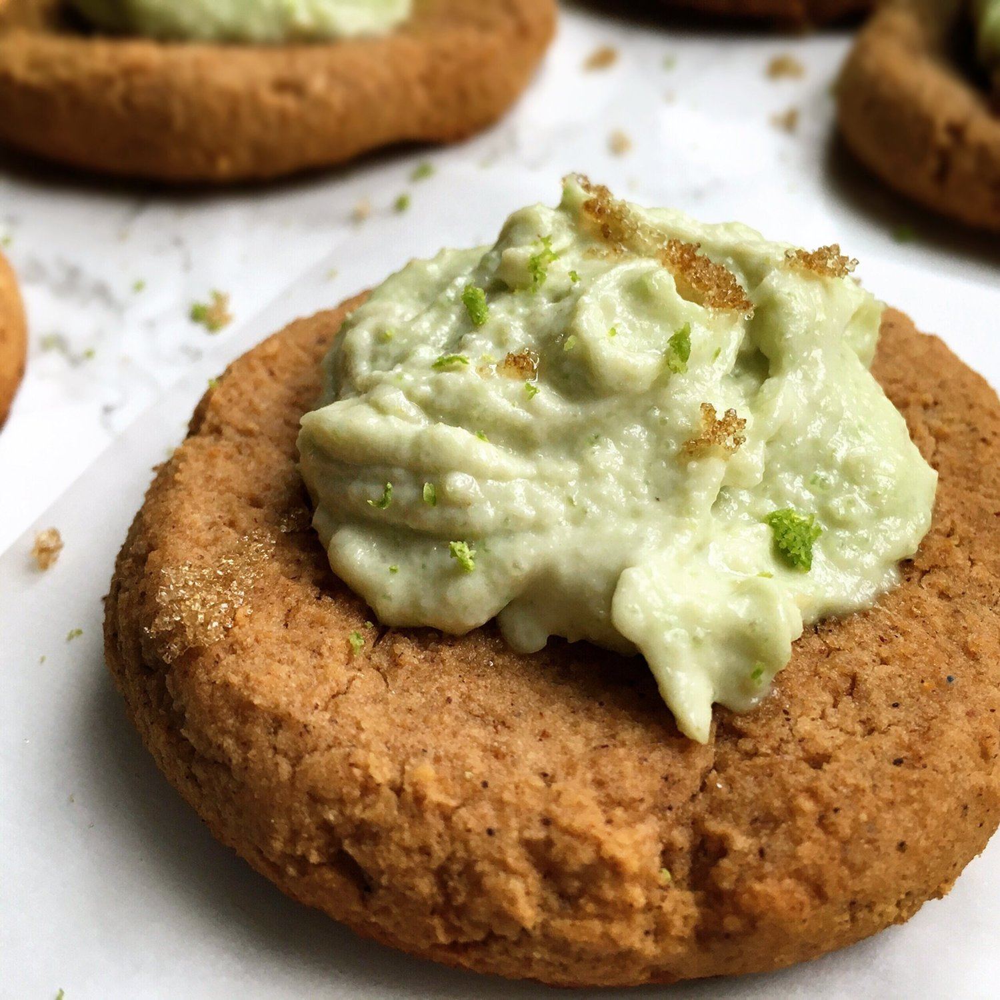
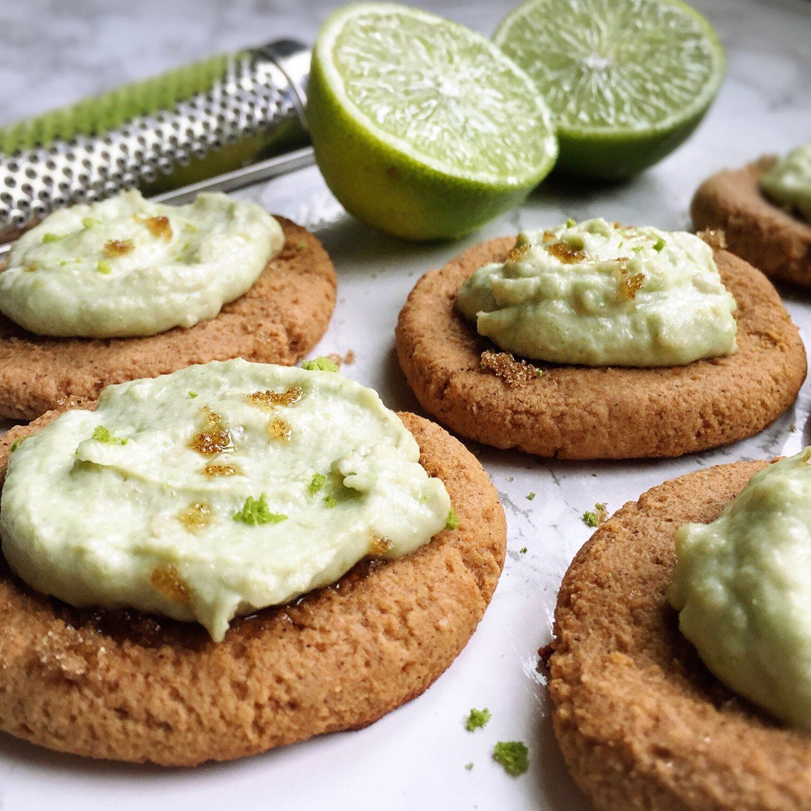
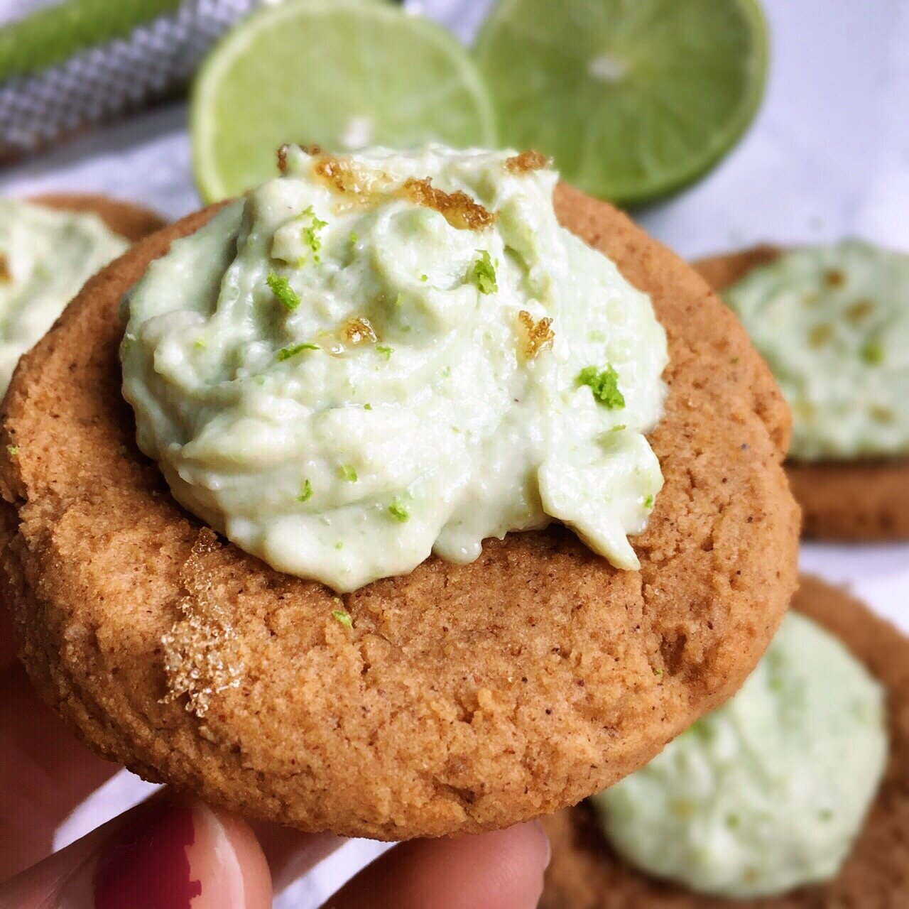
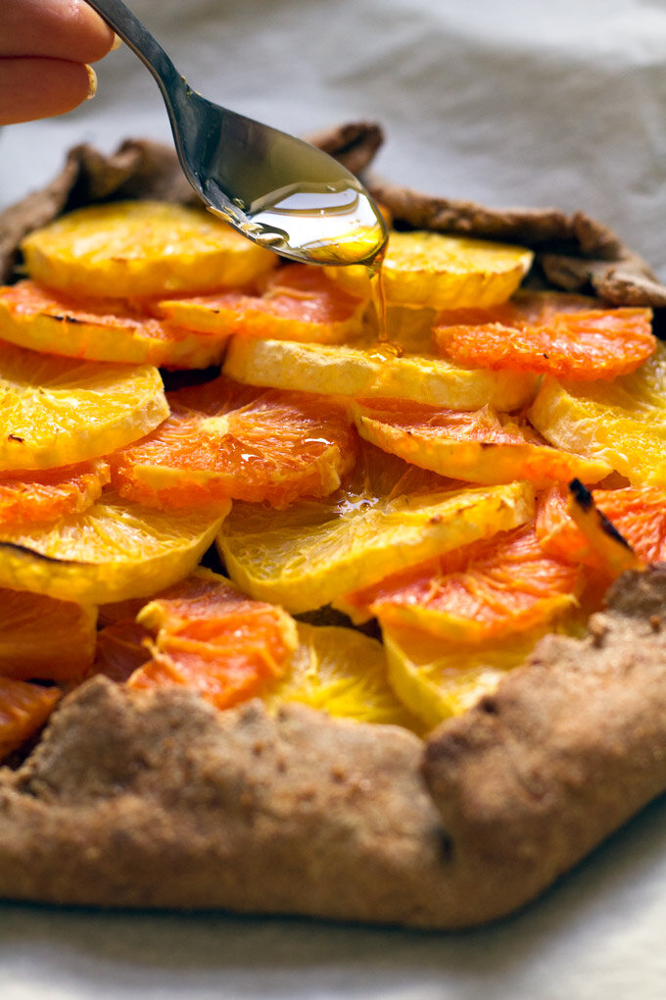
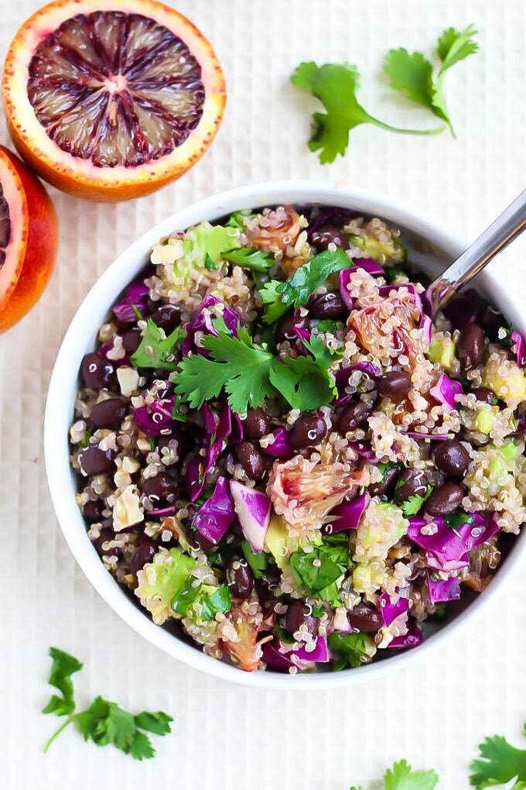
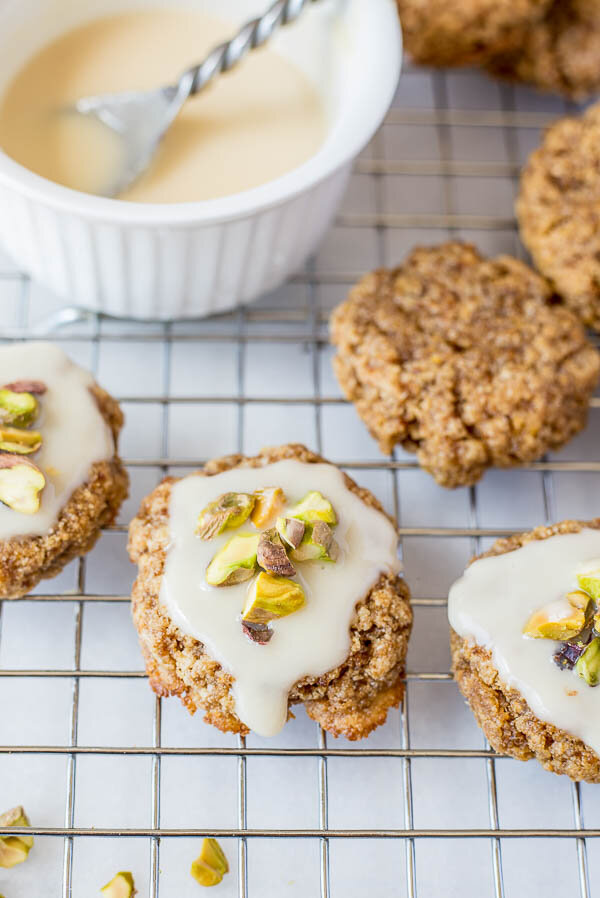
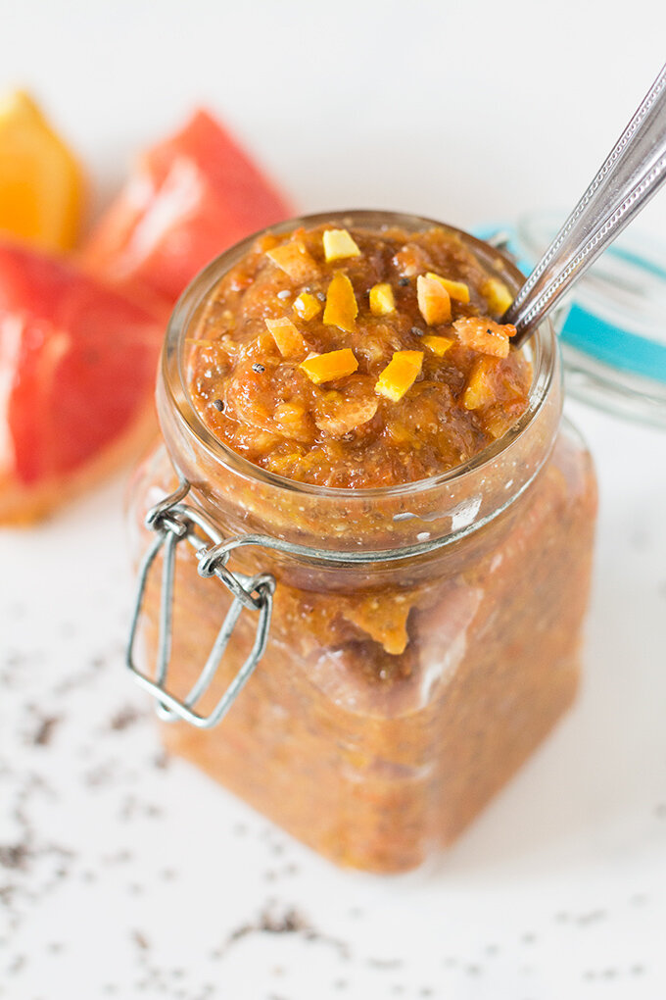

Vegan Key Lime Pie Cookies - 5 CITRUS PACKED RECIPES


in black & white



These healthy key lime pie cookies are lightly crisped on the exterior and perfectly soft on the inside. They are a marvelous blend of a snickerdoodle pie crust cookie with a vegan key lime curd that really deliver sweet, creamy, citrus flavors. This recipe is a unique twist on a classic treat, and it is completely vegan, gluten free, grain free, and dairy free.
This recipe is one of a series of FIVE Citrus Recipes I am grateful to be a part of! I've collaborated with four other lovely female bloggers to bring you some fantastic foods proper for spring! All five recipes are vegan and perfect for a healthy lifestyle, so check those out below as well, okie? :)
I was inspired by limes for my recipe! When I think of spring, I think of new, green leaves on the trees. I think of pastel colors and butterflies and flowers, fresh cut grass smells, and birdies chirping. The brightest color to me is greeeeen, so lime it is! My mother's birthday is also in a week (8 days to be exact!), so I think of my mother in the spring. One of her favorite desserts is key lime pie, so I knew that's what I wanted to make for her. Sure, I could make a traditional, boring, basic pie, but a twist on the classic dessert just sounded much more fun. And boyyyyy, was it.
Wait until you try these cookies. When you do, you'll see that the balance between the "pie crust" (cookie) and "key lime filling" (vegan lime curd topping) is just absolutely perfect. I could rave and rave for hours about the lime curd, while simultaneously eating gallons of it with two spoons at once. Don't ask how, I'd make it happen. It's creamy, so sweet, and subtly lime-flavored. I was terrified that it would be too citrus-y, the kind that makes your tongue skin want to peel off, but nope :) 'tis just right. I am pleased.
The cookie base is my take on a classic snickerdoodle cookie. The hints of cinnamon make me happy, as cinnamon always does. These cookies make the kitchen smell like summer at grandma's house when you're baking them. I think we can all agree that cinnamon is one of the top three best spices ever. Right? Right. This recipe uses a plant-based protein powder to boost the protein content and create a soft, cookie center! If you don't have this specific kind, any pea-based protein powder will work! For a sugar free version of these cookies, the coconut sugar can be replaced with baking stevia.. This recipe also relies on IMO fiber syrup for structure; if you do not have this ingredient, any syrup can be substituted such as maple syrup, agave, or whatever you prefer!
Don't be reluctant to try these because of the green color! Green is goooood. Green is life. Make these cookies and let me know what you think! If you do, take a quick picture and tag me on Instagram! It makes me ridiculously happy to see.
And be sure to check out the other stunning vegan citrus recipes below!!
Vegan Key Lime Pie Cookies
Makes: 15 cookies
Cookie Base
-
4 scoops vanilla Nuzest protein powder (50 grams, or other plant protein)
-
1/2 cup coconut flour
-
1/4 cup coconut sugar (or baking stevia)
-
1/8 tsp sea salt
-
1 tsp cinnamon
-
1/2 cup IMO fiber syrup (or maple syrup)
-
1/2 cup almond butter
-
3/4 cup unsweetened almond milk
Key Lime Topping
-
1/2 cup raw cashews, soaked in water overnight
-
Zest of 2 limes
-
Juice from 2 limes
-
1 TBSP maple syrup (or stevia)
-
1 TBSP coconut oil
-
1-3 TBSP warm water
-
In a medium sized bowl, combine the plant-based protein powder, coconut flour, coconut sugar (stevia also works), sea salt, and cinnamon. Mix until even.
-
In a small bowl, mix the IMO fiber syrup (maple syrup or other preferred sweetener also works), almond butter, and almond milk. Add this wet mixture to the dry mix in the larger bowl, and mix well until there are no lumps. If the batter seems dry, add another tablespoon of almond milk at a time until the batter completely mixes without crumbling.
-
Spray a cookie sheet with nonstick spray. Form a cookie dough ball with your hands and place it on the cookie tray. Lightly press down on the cookie to flatten. Repeat to form 15 cookies. Bake at 350 F for 14-17 minutes until golden brown. Remove from the oven and let cool.
-
While the cookies are cooling, make your key lime topping. Soak the raw cashews in water overnight, OR boil them in water for 5-10 minutes until soft. Strain, and blend the cashews with the remaining ingredients except for the water. If you're having a hard time blending, add 1 tablespoon of warm water at a time until a thick, creamy lime curd forms with no lumps remaining.
-
Add a dollop of lime curd to the top of each cookie, then enjoy!
Nutrition info for 1 cookie: 145 calories; 8 g fat, 18 g carbs (10 g fiber), 6 g protein
FOUR MORE CITRUS PACKED RECIPES
1. Rosemary Orange Galette with Chamomile Maple Syrup from Love Me, Feed Me
2. Blood Orange Quinoa Salad from Emilie Eats
3. Chewy Lemon Cookies with Coconut Icing and Pistachios from Fooduzzi
4. Orange Grapefruit Chia Seed Marmalade from Diary of an ExSloth

rosemary-orange-galette


lemon-cookies-coconut-icing-pistachios-7

orange-and-grapefruit-chia-seed-marmalad-1c